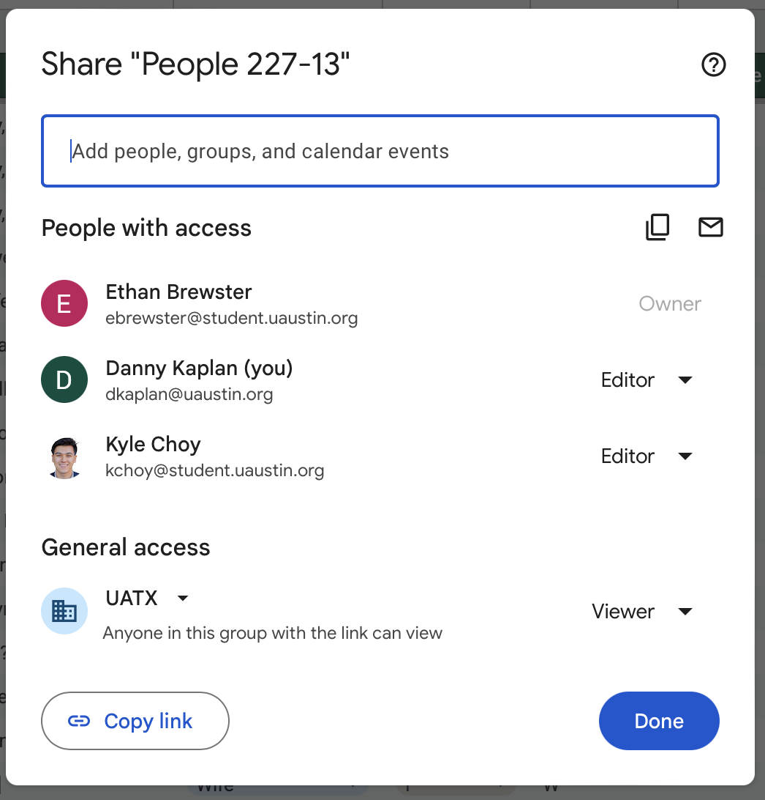

Census Project Phase II Checklist
You should already be at or beyond Step 6 in the Census term project quide. Before continuing with this document, make sure you have completed Steps 1 through 6. If you need help, this is the best possible time to ask!
Spreadsheet basics
At this point, you have two spreadsheets—persons and households—created and have entered data in them.
Action Item
For both spreadsheets, make sure they are read-accessible to anyone at UATX and that editor access has been given to dkaplan@uaustin.org. To accomplish this, go to the blue “Share” button in the top right corner of the sheet. Press the left side of the button it to bring up a sharing dialog box.
Here is an example of the dialog box for a student who has already set up the sharing.

Notice that the student (thanks, Ethan!) is listed as an editor and that he has also added dtkaplan@uaustin.org, also as an editor. You can add others if you want. (Do this by entering an email address in the “Add people” box.)
Notice also that under “General access” there is “Viewer” permission set for people from the UATX domain.
Action Item
Many students have arranged their spreadsheet to be formatted prettily. Such pretty formatting is intended for a human reader, but almost always gets in the way of working with data on the computer. Undo the pretty formatting by clicking on the V menu in the green tab per Figure 2.
Make sure that the variable names are in row number 1.
Action Item
Just FYI. I will arrange to “publish” your sheets so that I can read them in as data frames. You don’t have to do anything, but please don’t turn off the publishing if you happen to notice it.
Unique household ID
Note that in Figure 1 there is a column entitled “HouseholdID.” The entries in this column are sensible-looking digits: 1, 2, and so on.
Action Item
It’s crucial that each household has a unique ID across all of the students spreadsheet. Creating a unique ID is easy: select some token that is unique to you, for instance, your full name or the ID of the census schedule from which you transcribed the data. Then preface the existing ID with this token. For instance, replace the digit 1 with 227-13-1. It’s OK that the result will be a character string rather than a digit.
Action Item
Make sure that the household IDs are consistent between your person spreadsheet and your households spreadsheet. In there households spreadsheet, the IDs will never be repeated from one row to another, while in the person spreadsheet the IDs will be repeated as needed to indicate the household to which each person belongs.
Person names
Action Item
Create two columns to hold the name of the person: one for the last name and the other for all other names, like this:
| surname | prename |
|---|---|
| Schmidt | John Jacob Jingleheimer |
| Trump | Donald John |
Action Item
Give each person a surname, replacing the _________ sometimes used by the Census workers.
Numbers & money
Action Item
Variables like age are usually given as integers, e.g. 17, but sometimes given in another format such as “8 months” or “1 1/2.” Both these latter should be transcribed in decimal form, respectively 0.67 and 1.5 for the examples.
Action Item
Some columns such as income or rent are given as money. List the amount without any money symbol. So, $140 should be entered as 140. The codebook is the place to put the documentation that the money is in dollars. (I don’t think we’ll have occasion to refer to non-dollar money. If this had been the case, we would need another variable, denomination which could have values like “peso”, “GBP”)
Unclear or missing data
Action Item
Sometimes a cell in the original population schedule is entirely blank. Such cells should simply be blank in your transcribed spreadsheet.
It’s a different situation when a cell in the original population schedule is not completely legible or is otherwise ambiguous. Examples from Figure 1 are “C2?” and “[wife name?]”. We will take a simple approach here:
For categorical variables, enter the level “[unclear]” as was done sometimes in Figure 1. Both of the above examples, “C2?” and “[wife name?]”, should be re-rendered as “[unclear]”.
For numbers, enter the code NA (without quotes).
Household data
The unit of observation in your households spreadsheet corresponds to one or more people living in a home, clinic, institution, and such. Figure 3 shows an example with the correct unit of observation, but with other items that need work.
Some good features seen in Figure 3:
- Each household ID will be globally unique.
- Blank cells are used appropriately in the “Value of home” and “monthly rent” columns.
What needs work here?
Rows 1 and 2 are not needed. Instead, the variable names should be in Row 1. The right place to document the unit of observation is in a codebook. I haven’t asked you to generate an individual codebook because, in the end, we will all use the same codebook.
The
Locationshould be split into three separate variables:- street_name
- house_number
- household_type
- state
- county
- city
For Figure 3 the three columns would look like this:
| street_name | house_number | household_type | state | county | city |
|---|---|---|---|---|---|
| Heval | 4202 | home | TX | Travis | |
| Heval | 4200 | home | TX | Travis | |
| Ave H | 4201 | home | TX | Travis |
The state, county, and city/town information might be in the top material in the original population schedule. These should refer to the location of the building. For the persons data, there may be different info. If you notice such a situation, mention it to dkaplan@uaustin.org and we’ll work out a solution.
Put the household value or rent in the same column, called
value. We can sort out the rent vs own is matter when wrangling the data later on.We don’t need a family name in the households sheet. This is because often not everyone in a given household has the same last name. We can get the last name(s) from the persons sheet.
Strictly speaking, we don’t need a number-of-people column. This can easily be calculated from the persons sheet. Nevertheless, let’s do include number-of-people in the households sheet. We can use it to check the internal consistency of the data.
Household types that I have seen include “home” and “farm”, but there may be others that you encounter. Enter them as you encounter them. Later, we’ll come back to this and standardize the levels.
Variable names
We should all use the same names for variables. We will talk about this in class and enter the decision here.
Categorical levels
We will need to standardize the levels for categorical variables. I will survey the whole set of sheets to see what people are using. We can decide as a class what the standard names should be.
Note that surname and prenames cannot be constrained to a standard set of levels.